1 ヒアリング
受付にてご記入いただいた問診票の内容に沿ってお話を詳しくお伺いしていきます。

ー はじめまして ー
数ある治療院の中から、私たち岸和田の HAREYAKA+Rebody 整骨院を選んでいただき、本当にありがとうございます。
+Rebody は、“一時的に痛みを取ることだけ” を目的とした場所ではありません。
もちろん、現在あなたが抱えているつらい痛みは、プロとしてしっかり改善へ導きます。
しかし、「またすぐ戻ってしまう」「前より悪くなっている気がする」そんな、
繰り返す不調による不安を抱える方にも安心と納得をお届けしたいと考えています。
今の不調、そして未来起こりうる不調。その両面を解決することが、
予防・再発予防専門院 ® である+Rebody が目指すことです。
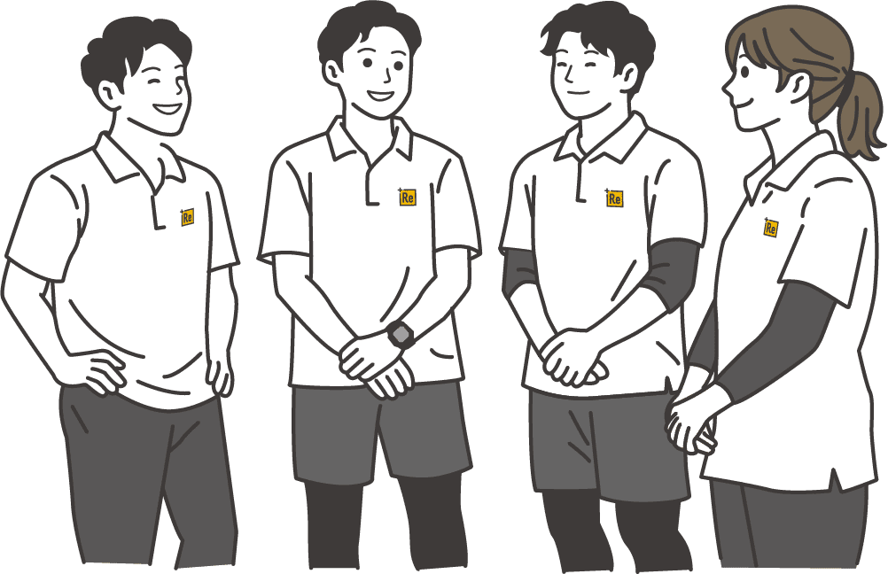
痛みは、突然生まれるものではありません。日常の姿勢や動きの積 み重ねの中で、体のバランスは少しずつ変化していきます。
その結果として
・腰痛を繰り返す
・肩こりが慢性化する
・運動するとどこかが痛くなる
といった状態が起こることがあります。
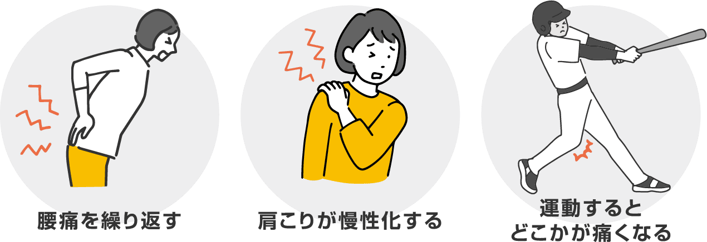
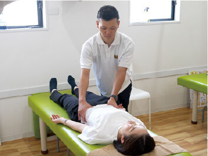
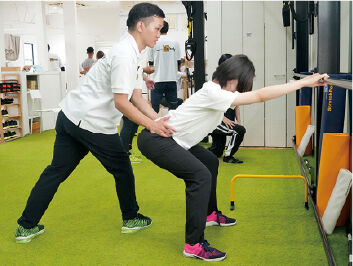
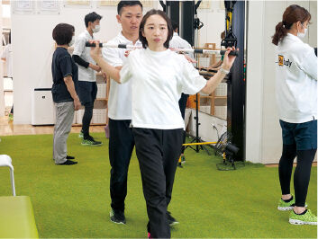
岸和田の HAREYAKA+Rebody 整骨院では、
痛みのある場所だけを見るのではなく、
「なぜそこに負担がかかり続けたのか」
という視点から体を見ていきます。
・整える
・安定させる
・再教育する
この “再教育の流れ” を大切にしながら、
無理なく、あなたの歩幅に合わせて進めていきます。
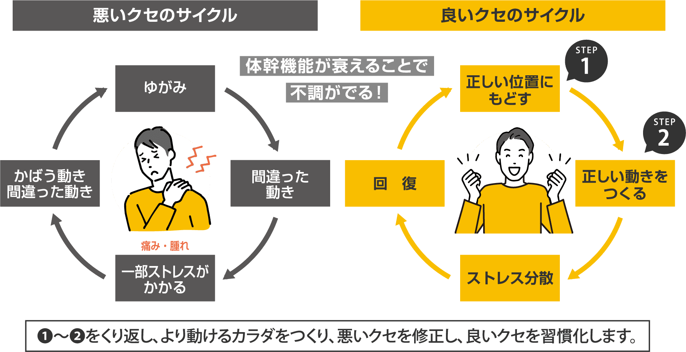
私たちのカラダは、生まれた瞬間から
重力のある地球の中で動くための力を少しずつ身につけていきます。
赤ちゃんは、誰かに教えられるわけでもなく
仰向け → 寝返り → うつ伏せ → 四つ這い → 高這い
→ 座る → つかまり立ち → 立つ → 歩く
という発育発達のステップをたどります。
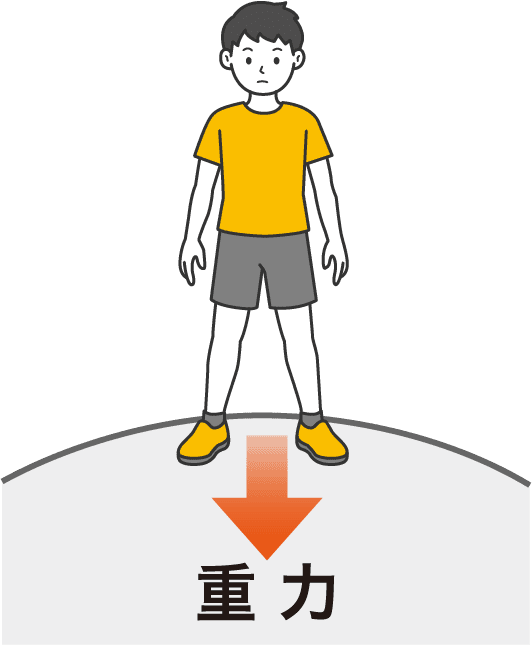
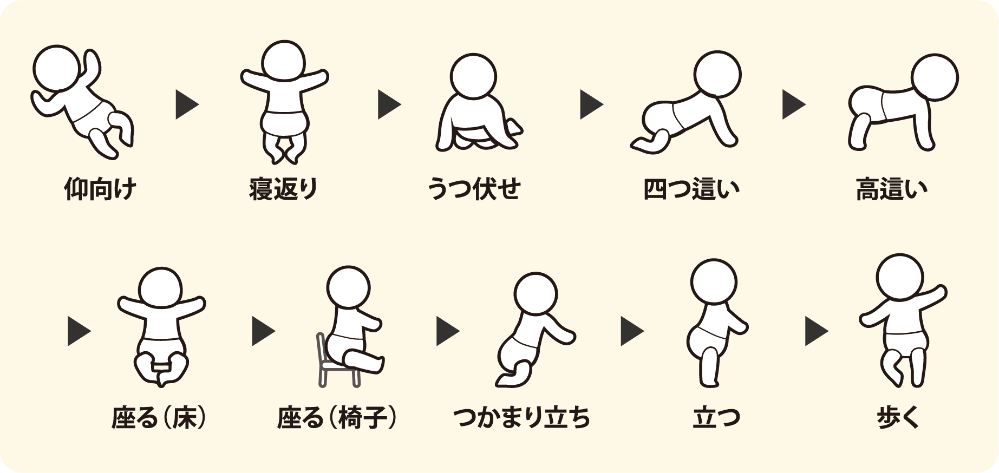
この過程で自然に身につけているのが体幹を使いながら重力に抗って動く力です。
この力こそが、私たちが一生使い続ける「動きの土台」になります。
しかし現代の生活では、この体幹の働きを使う機会が大きく減っています。
昔のように
といった生活とは大きく変わりました。
その結果、本来は自然に保たれていた 体幹の働き が使われなくなり、 少しずつ 動きの土台が崩れていきます。
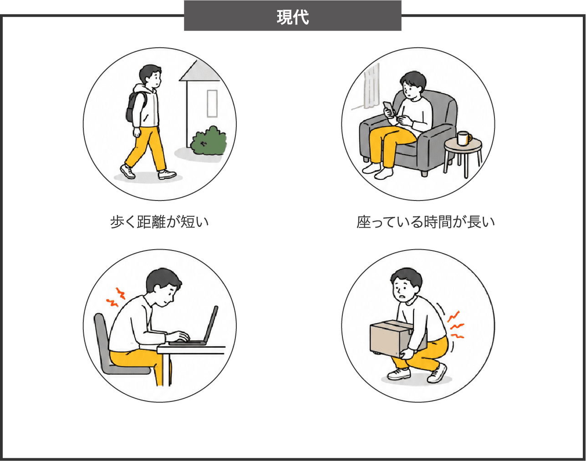
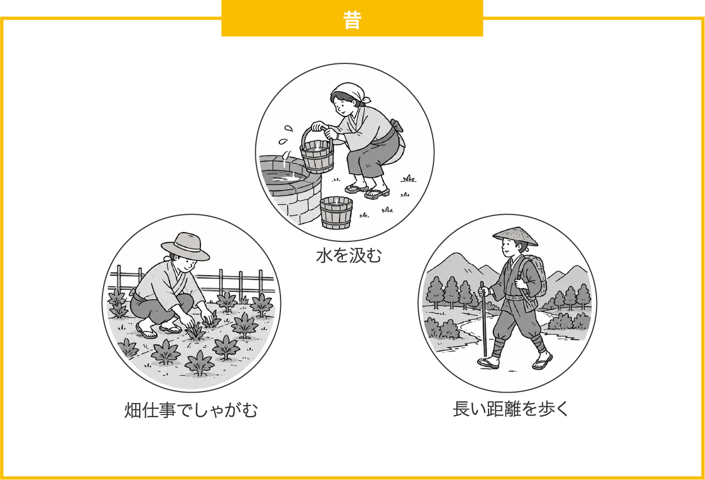
体幹の働きが低下すると、
カラダは動くために別の場所でバランスを取ろうとします。
例えば
といったように、本来の役割とは違う場所が頑張り続ける状態になります。
これが「動きのクセ」です。
そしてこのクセが続くと、やがてカラダの許容範囲を超え
「間違った動きのクセ」
へと変わっていきます。
その結果として
といった不調につながっていきます。
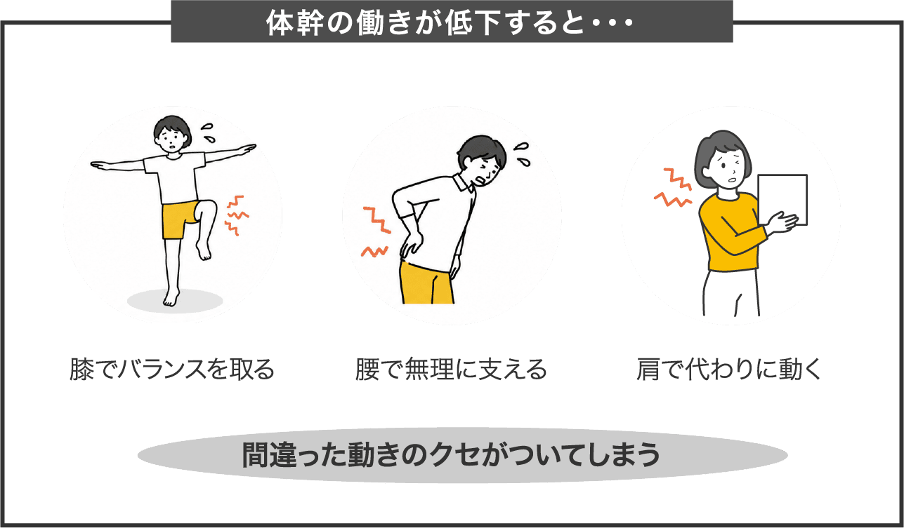
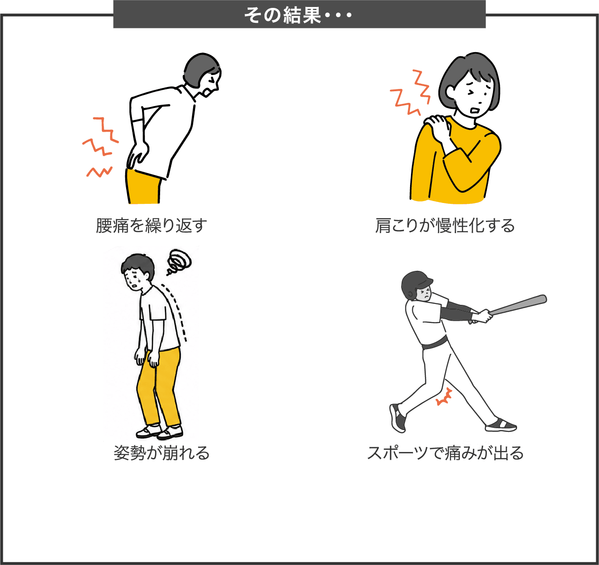
この状態で
といった対処だけを行っても、動きのクセが変わらなければ
また同じ場所に負担がかかってしまいます。
大切なのは、動きの土台をもう一度整えること。
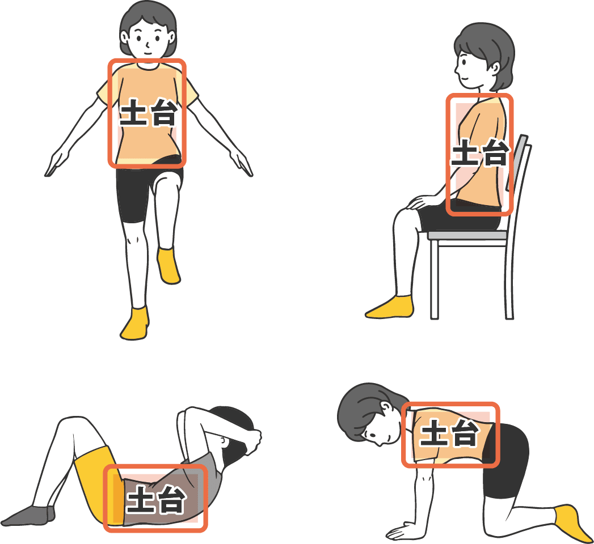
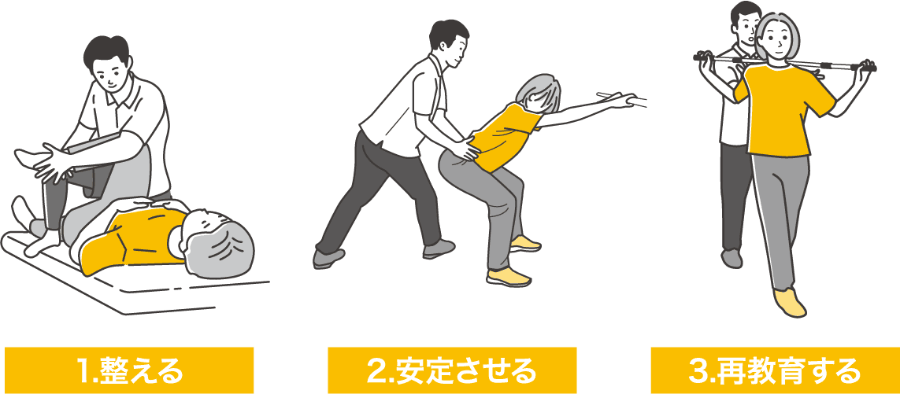
岸和田の HAREYAKA+Rebody 整骨院では、
赤ちゃんの発育発達の考え方をベースに
整える → 安定させる → 動きを再教育する
という流れで、カラダの使い方そのものを見直していきます。
筋肉を強くすることが目的ではありません。
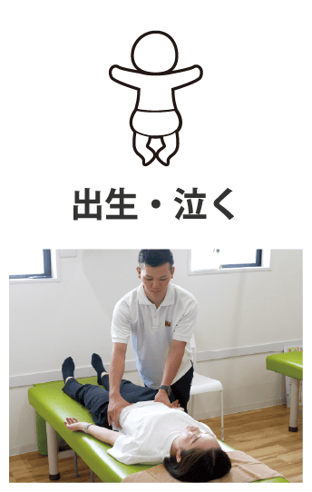
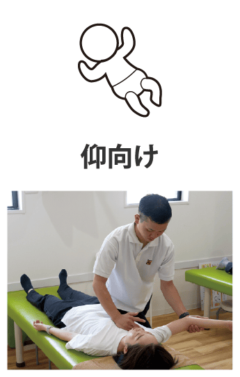
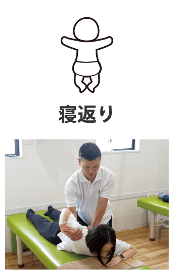
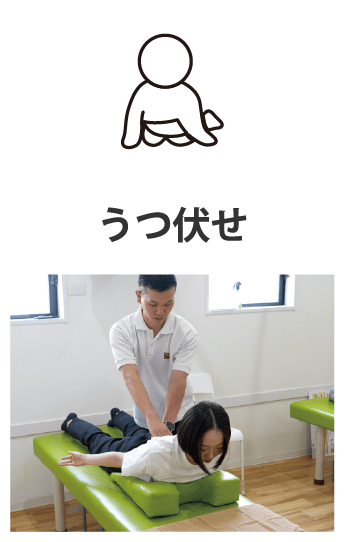
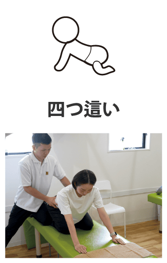
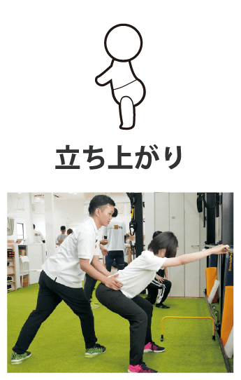
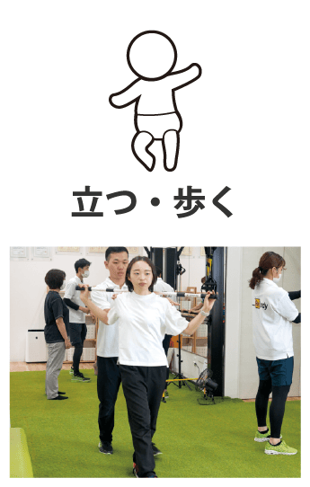
受付にてご記入いただいた問診票の内容に沿ってお話を詳しくお伺いしていきます。

検査・評価をおこないカラダの問題を可視化します。
原因を姿勢・動作分析ツールで特定していきます。

カラダの状態と痛みの原因、これから行う施術内容をご説明いたします。

ご利用者様の症状に合わせたオーダーメイド施術を行います。

今後の施術方針や通い方、ご自宅での過ごし方、ホームエクササイズなどをアドバイスさせていただきます。

本日の施術は終了です。次回の来院時スムーズに施術を受けていただくため、ご予約もお取りします。
お疲れ様でした。